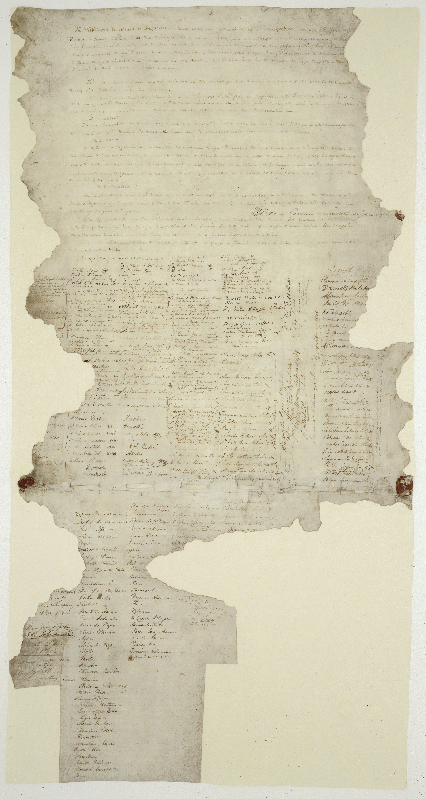

Introduction to Te Tiriti O Waitangi
Te Tiriti O Waitangi (The Treaty of Waitangi) is Aotearoa New Zealand's foundational document. It was signed on the 6th of February 1840, at Waitangi in the Bay of Islands. It establishes a formal agreement and relationship between the British Crown and over 500 Māori rangatira and outlines the principles of governance, rights, and partnership that shape New Zealand today.
History
1835 October - He Whakaputanga (Declaration of Independence):
Northern Rangatira
declared
sovereignty and independence over Aotearoa, which was formally recognised by the British Crown.
1840 February 4-5 - Drafting & Translation of Te Tiriti O Waitangi:
Te Tiriti was
drafted by William Hobson and James Busby; the text was translated overnight into Te Reo Māori by Henry
Williams and his son Edward before being debated by rangatira at Waitangi.
1840 February 6 - The First Signing:
Over 40 rangatira signed the Te Reo Māori version at Waitangi. Copies were then circulated around the
country, collecting more than 500 signatures.
- Māori Version: Guaranteed the Māori tino rangatiratanga (sovereignty) while granting the Crown kāwanatanga (governance).
- English Version: It was stated that the Māori would give up full sovereignty to the British Crown.
1860s - Ngā Pakanga o Aotearoa (The New Zealand Wars):
Armed conflicts fought across the North Island (such as Taranaki, Waikato, and Tauranga) as the colonial
government sought to enforce the Crown's authority and acquire land against strong Māori resistance.
Late 1800s - Land Loss & Conflict:
Intentional misinterpretations and crown actions led to whenua raupatu (land confiscations), the New Zealand
Wars, and the systemic disenfranchisement of the Māori.
1975 - The Waitangi Tribunal was Established:
The New Zealand parliament passed the Treaty of Waitangi Act to investigate breaches of the Treaty
principles and initiate settlements.

Principles
Partnership
This principle ensures that everyone, Māori and non-Māori work together, respect each other's ideas, and make decisions together.
Participation
This principle guarantees meaningful opportunities for Māori to be actively involved in every stage of a process. Participation is about inclusive engagement and valuing Māori perspectives and leadership.
Protection
This principle commits to safeguarding Māori rights, culture, language, values, and knowledge. It involves taking steps to preserve the cultural identity.
Impact Today
Te Tiriti O Waitangi remains as a foundational document of Aotearoa New Zealand and actively shapes the contemporary law, public policy, and institutional frameworks. Rather than remaining as a historical relic, Te Tiriti O Waitangi's principles guide how modern sectors operate to achieve fair outcomes for Māori as tangata whenua.
In the health sector, Te Tiriti provides an essential framework to make health care fair for everyone. Legislation such as the Pae Ora (Healthy Futures) Act mandates that health and disability systems incorporate the Treaty principles, prioritise Māori health, and support culturally safe care and Kaupapa Māori models.
Similarly, in government and digital infrastructure, Te Tiriti influences the public sector policy, procurement, and emerging technologies. Guidance from agencies like the Human Rights Commission emphasises that modern digital systems and artificial intelligence must respect human rights, uphold Māori data sovereignty, and involve Māori oversight in governance and decision-making processes.
Compliance
This website was developed in accordance with key legal and ethical web design standards in Aotearoa New Zealand.
- Legal & Copyright: We properly credit our sources, like the Ministry of Health and the Human Rights Commission, so we use their information honestly and legally.
- Respectful Content: The website treats Te Tiriti O Waitangi with respect by sharing accurate history and honoring the Māori culture and their rights.
- Device Responsive: The site maintains clean and responsive practices, ensuring consistent performance, cross-device usability, and mobile navigation functionality across web browsers.